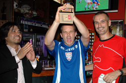

|
Friday, 29th June, Legends Sports Bar Roppongi,
Whether drowning sorrows or celebrating victories there was certainly a lot of booze flowing at the Tokyo Metropolis League's end-of-season BBQ Party and Award Ceremony, attended by more than 250 of the leagues faithfuls - including some notable TML & Footy Japan sponsors/supporters: Mark & Mary Devlin from Metropolis, Nick Johnston from Wall Street Associates, Gregory Glanzmann from BMW, Yuji from Footnik (soon to be opening in Osaki) and James Oakes from new supporters Gaba - who we'd like to thank for coming along presenting awards and generally putting up with a bunch of roudy, pissed-up lads.
None more so than Shane FC mauler Dave Callaghan, who accepted the Plate prize on behalf of his team who beat TML Div. 2 Champions in the plate final - Dave's speech was utterly incomprehensible - as were most of the speeches truth be told (yes even your's Rob Keyworth!). Even Footy Japan's Communications Director and captain of BFC (who won the 1st Division) wasn't his usual articulate self during his acceptance speech - he just mumbled about: "thanks to spppooooonnnsssserrrrz and that and Sid and Paaaccco and other teams because if you isn't there we has noooooooo ooonnne to beat and stuff." Cheers for that Jon. Remember, for future reference 19-bottles of Corona in as many minutes is probably not a good idea - and you were supposed to be flying the flag for your company AND you football club, you're an utter disgrace.
Nixon Dasilva for Zion FC seemed chuffed to bits at getting a new pair of Puma's for being top-goalscorer in Div. 2 with 18 goals in 13 games. Kirk Neureiter who scored 19 in 18 games in Div. 1 didn't make an appearance - I guess it's hard to hang your boots up if you have to come and collect a brand new pair from Puma!! TML hopes to be seeing more from Capn' Kirk next season - way to early for retirement - I hear BFC are currently recruiting...
All in all it was a superb night with BEFC being by far the most vocal, if they play football next season as well as they chant, they'll have no trouble in Div. 1. BFC Vags shouldn't struggle too much either, because... well... they just shouldn't and Simon Sparkes looked so happy to accept the Runners-up award (happy/bordering on sexual excitement), it just wouldn't be fair...
So there we have Season 4 done & dusted, bring on Season 5! Captains don't forget to get all your admin. stuff done on time or there won't be a Season 5 for your team!!
Finally, pick up the new Footy Japan Magazine and circulate it amongst your friends, family, colleagues, potential advertisers and sponsors.
See you next season.
Report by FJ
|